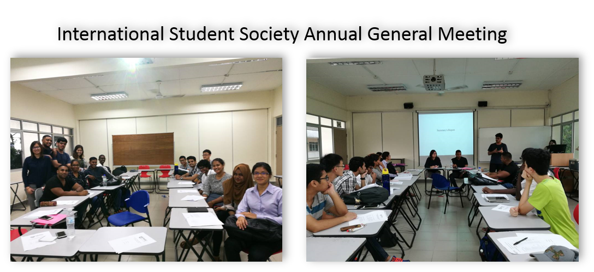
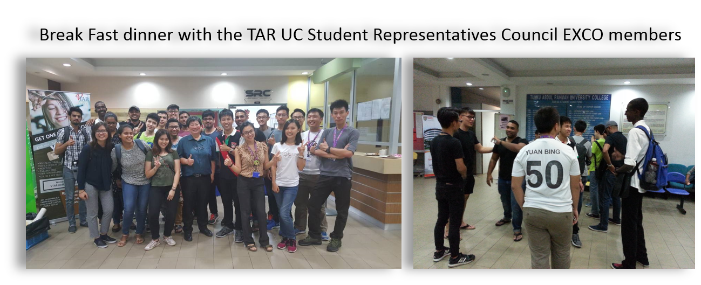
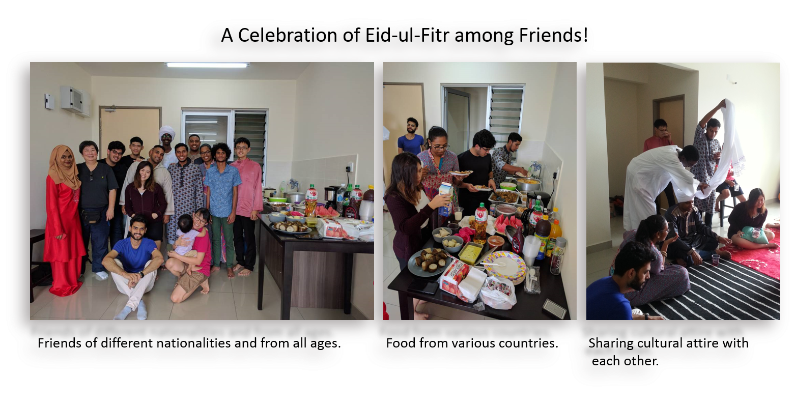
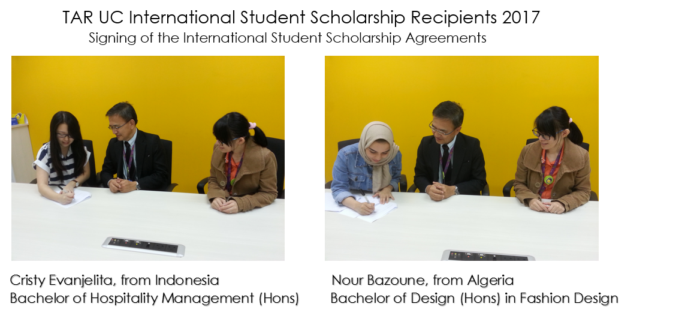
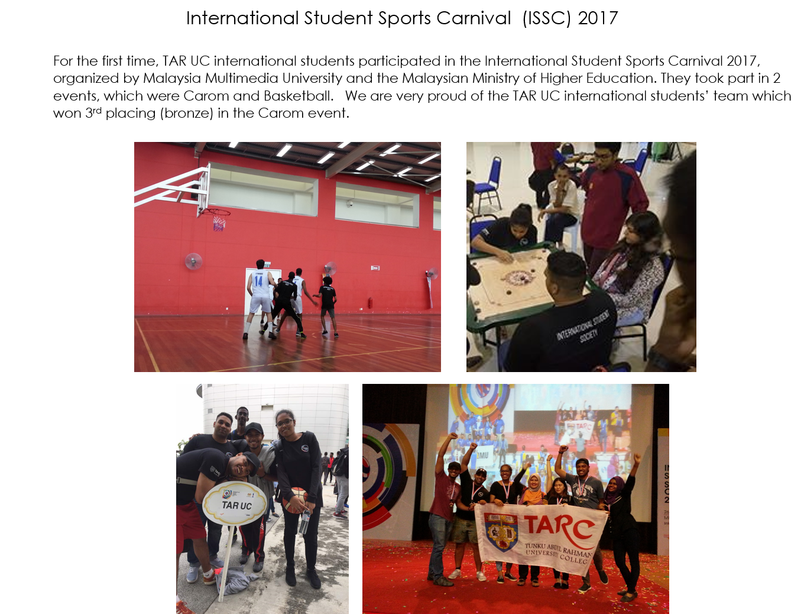
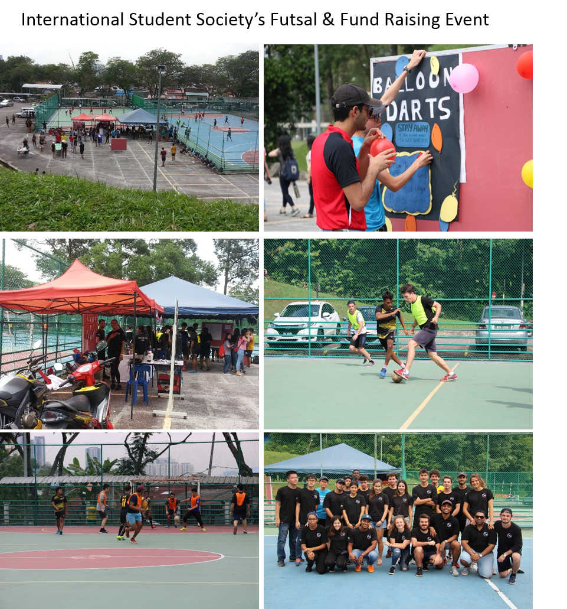

Tunku Abdul Rahman University College
Home
Programmes
Why TAR?
Campuses
Students
Student Activities
Participation in activities organised by student societies and clubs are an important component of a complete tertiary education and student experience. International students are encouraged to participate in the numerous clubs, societies and activities available at TAR University College. Participation in these social, cultural and sports activities helps to maximize the full potential of your student experience in Malaysia. It is also one of the easiest way to make friends from all over the world.





